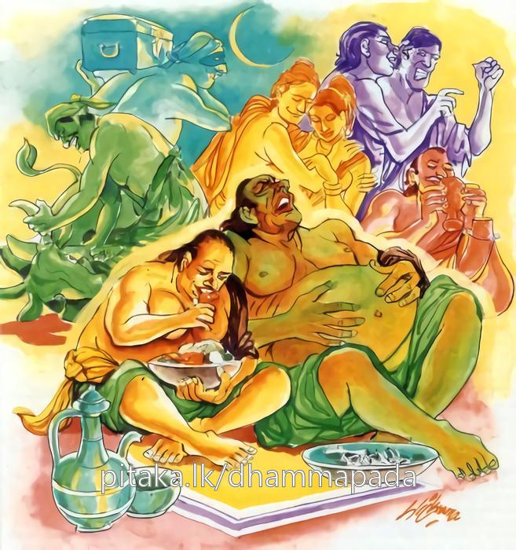

5-10 දසවන උත්පලවර්ණාවගේ වස්තුවයි.
මෙම කතාව සද්ධර්ම සාගරයෙන් ද කියවන්න.
මධුවා මඤ්ඤති බාලො යාව පාපං න පච්චති
යදා ච පච්චති පාපං අථ බාලො දුක්ඛං නිගච්ඡති.
අකුශල කර්මය යම් තාක් විපාක නො දේ ද, ඒ තාක් අඥාන තෙම එය මී මෙන් මිහිරි කොට සිතන්නේ ය. යම් කලෙක අකුශල කර්මය විපාක දේ ද, එ විට අඥාන තෙම බලවත් දුකට පැමිණෙයි.

මධුවා මඤ්ඤතී බාලො ආදි මේ ධර්මදේශනාව ශාස්තෘන්වහන්සේ දෙව්රම වැඩවාසය කරන කාලයෙහි උත්පලවණ්ණා තෙරණිය අරභයා දේශනා කළසේක.
ඈ වනාහි පියුමතුරා බුදුන්සමයෙහි ප්රාර්ථනා තබා කල්ප ලක්ෂයක් පින් කරමින් දෙව්මිනිසුන් අතර හැසිරෙමින් මේ බුද්ධොත්පාද කාලයෙහි දෙව්ලොවින් චුතව අවුත් සැවැත්නුවර සිටු පවුලක උපන්නාය. නිලුපුල් ගැබකට සමාන වර්ණ ඇතිවූ හෙයින් ඇය උත්පලවර්ණා යන නමින්ම හැඳින්විණි. ඈ වැඩිවියට පත්වූ කාලයෙහි මුළු දඹදිවම රජවරුද සිටුවරුද ඔබේ දුව අපට දෙන්නැයි සිටුවරයාට පණිවුඩ එවූහ. පණිවුඩ නොරවූ කෙනෙක් නැත. ඉන්පසු සිටුවරයා, මට සියල්ලන් සතුටු කළ නොහැකිය, මේ සඳහා උපායක් කළ යුතුයයි සිතා, දුව ළඟට කැඳවා, දුව පැවිදිවෙන්ට පුළුවන්දැයි ඇසීය. ඈ පශ්චිමභවික (අවසන් ආත්මභවය) වූ හෙයින් ඒ වචනය සියක්වර සිඳි තෙලක් හිස ගැල්වූවාක් මෙන් විය. පියාණෙනි පැවිදි වන්නෙමියි කීවාය. සිටුවරයා ඈට සත්කාර කොට ඈ භික්ෂුණීආරාමයට ගෙනගොස් පැවිදිකරවීය.
පැවිදිවූ ළඟදීම ඈට පොහෝගෙයි වතාවත් සියල්ල භාරවිය. ඈ පහන්දල්වා පොහොයගෙය අතුපතු ගා පහන්සිළුව නිමිත්තක් හැටියට ගෙන නැවත නැවතත් ඒ දෙස බලමින් තේජෝකසිණාරම්මණයෙන් (ගිනිසිළු අරමුණ) ධ්යාන ලබා එයම පාදකකොටගෙන, සිව්පිළිසිඹියා හා අභිඥාද සහිතව රහත්බවට පැමිණියාය. පසු කලෙක එතුමිය ජනපද චාරිකාවෙහි හැසිරී ආපසු පැමිණ අන්ධවනයට ගියාය. ඒ වනවිට භික්ෂුණීන්ට අරණ්යවාසය තහනම් නොවීය. එතුමිය අන්ධවනයෙහි කුටියික් කරගෙන ඇඳක් තබාගෙන තිරයකින් වටකොට ගෙන එහි සිටියාය. සැවැත් නුවරට පිඬුසිඟාගොස් ආපසු කුටියට පැමිණියාය.
ඇගේ මාමාගේ පුතා වන නන්දමාණව නමැත්තා ගිහිකාලයේ පටන් ඈ පිළිබඳ බැඳුණු සිතකන් විසීය. හෙතෙම තෙරණිය මෙහි පැමිණි බව දැන පිඬුසිඟා කුටියට ඒමට පළමුවෙන්ම අන්ධවනයට ගොස් ඒ කුටිය ඇතුළට රිංගා ඇඳ යට සැඟවී සිටියේය. තෙරණිය අවුත් කුටියට පිවිස දොර වසා ඇඳේ හිඳගත් කෙණෙහි පිටතදී අව්වේම ආ නිසා ඇතිවූ ඇස්අඳුර පහවී යනකොටම නන්දමාණවයා ඇඳ යටින් නැගීසිට ඇඳට ගොඩවී බාලය නොනැසෙව. බාලය නොනැසෙවයි තෙරණිය වළක්වද්දීම ඈ යටපත් කරගෙන තමන් පැතූ දෙය ඉටුකරගෙන යන්ටගියේය.
පසුව ඇගේ ගුණ දරා සිටිය නොහැකිවූවාක් මෙන් මහපොළොව පැළීගියේය. නන්දමාණවයා එතැනින් පොළොවට වැටී අවීචියෙහි උපන්නේය. තෙරණිය ගොස් එම පුවත භික්ෂුණීන්ට දන්වා සිටියහ. භික්ෂුණීහු ගොස් භික්ෂූන්ට දන්වා සිටියාහුය. භික්ෂූහු එය බුදුන්ට දන්වා සිටියහ. ඒ ඇසූ බුදුරජාණන්වහන්සේ භික්ෂූන් අමතා, මහණෙනි, භික්ෂු භික්ෂුණී උපාසක උපාසිකාදීන්ට යම් අඥානයෙක් පාපකාරී අපරාධයක් කරන්නේ මී හකුරු ආදී දෙයකින් මිහිරි රසයක් ලබන පුද්ගලයෙකු මෙන් මහත් ප්රීතියෙන් හා උද්දාමයෙනි. එහෙත් එහි විපාකය ගිනි අඟුරු ගිලින්නාසේ යයි වදාරා පූර්වාවර පුවත් ගළවා දහම්දෙසමින් මේ ගාථාව වදාළසේක.
පව පල නොදෙනතුරු අනුවණයාට මී වැනි
එය පල දෙන විටදි ඔහු දැඩි දුකට පත් වේ
එහි මධුවා යනු අකුසල හෙවත් පාපකර්ම කරන අඥානයාට ඒ කරන පාපකර්මය කරන අවස්ථාවේ එය මීපැණි මෙන් මිහිරි රසයක් මෙන් අපූරු ලෙස, සිත් ඇදගන්නා ලෙස මනාප ලෙස වැටහෙයිද, එය ඔහු මිහිරි ලෙසම මඤ්ඤති සිතයි. යාව යනු යම්තාක් කල් ඒ ඒ පාපං න පච්චති පාපය විපාක නොදෙයිද, මෙලොවදී හෝ පරලොවදී හෝ විපාක නොදෙයිද, එතෙක් ඔහු එසේ සිතයි. යදා ච යනු යම් කලෙක මෙලොව හෝ පරලොව හෝ විවිධ කටයුතු කරන ඔහුට මෙලොවදී නැත්නම් නිරයාදියෙහි මහා දුක්විඳින පුද්ගලයාටයි. පාපං පච්චති අථ පව විපාක දෙනවිට ඒ බාලො දුක්ඛං නිගච්ඡති ඒ බාල අඥානයා දුක විඳියි. දුක් ලබයි යනු අර්ථයි.
දේශනාවසානයෙහි බොහෝ දෙනා සෝවාන්ඵලාදියට පැමිණියහ. කලකට පසු ධර්මසභාවෙහි මහාජනයා කථාවක් ඇති කළහ. ක්ෂීණාශ්රවයෝ කම් සැප ඉවසත්නම්, කාම සේවනය කෙරෙත් නම් ඒ අය සේවනය නොකරන්නේ කුමක්ද? ඒ අයත් මල්නැති දිඹුල්ගස් මෙන් නොවෙත්, තුඹස් වගේද නොවෙති. තෙත ලේමස් ඇත්තෝය. එහෙයින් ඔවුහුද කම්සැප ඉවසති, කාමසේවනය කරති යනුවෙන් කථාවක් ඇතිකළහ.
භාග්යවතුන්වහන්සේ මහණෙනි, කිනම් කථාවකින් යුක්තව සිටියාහුදැයි අසා මෙබඳු කථාවකිනැයි කීකල්හි මහණෙනි, ක්ෂීණාශ්රවයෝ කම්සැප නොඉවසති, කාමසේවනය නොකෙරෙති. නෙලුම් කොළයක වැටුණු දියබින්දු එහි නොඇළෙයිද, නොපිහිටයිද පෙරළී ගොස් වැටෙන්නේම වෙයිද, ඉදිකටුවේ අග අබඇටය නොරඳාද, පිහිටා නොසිටීද පෙරළීගොස් වැටෙන්නේවේද එපරිද්දෙන් රහතන්ගේ සිතෙහි දෙයාකාර කාමය නොඇළෙයි. නොපිහිටයි යනුවෙන් පූර්වාපරසන්ධි ගළපා දහම් දෙසමින් බ්රාහ්මණ වර්ගයෙහි මේ ගාථාවද වදාළහ:
නෙලුම්පත දිය මෙන්
ඉදි කටු අගෙහි අබ මෙන්
යමෙක් කම්සුව නොවිඳී නම්
ඔහු බමුණෙකියි පවසමි
මෙහි අර්ථය බ්රාහ්මණ වර්ගයෙහිදීම පැහැදිලි වන්නේය. ශාස්තෘන්වහන්සේ ප්රසේනජිත් කොසොල්රජු කැඳවා මහරජ මේ ශාසනයෙහි යම් ලෙසකින් කුලපුතුන් හා කුලදුවණියන් මහත්වූ නෑසමූහයත්, වස්තුසම්පතුත් හැරදමා පැවිදිව ආරණ්ය සෙනසුන්වල වාසයකරති. එසේ වසන ඔවුන් රාගයෙන් රත්වුණු පාපී පුද්ගලයෝ අන්යයන් පහත්කොට සලකන අතිමාන වශයෙන් හෝ සලකමින් වෙහෙසට පත් කිරීම හා බ්රහ්මචරිය ප්රතිපදාවට අනතුරුද කෙරෙති. එනිසා භික්ෂුණීසංඝයාට ඇතුල්නුවර වාසස්ථානයක් කිරීම සුදුසුයයි දන්වා සිටියහ. රජු මැනවයි පිළිගෙන නුවර එක් පෙදෙසක භික්ෂුණීසංඝයාට වාසස්ථානයක් කරවීය. එතැන් පටන් භික්ෂුණීහු ඇතුල්ගමෙහිම වාසයකරති.